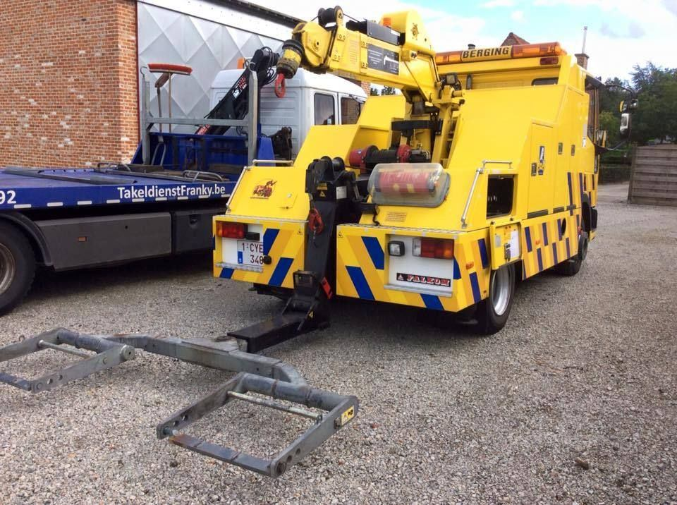

Takeldienst Maldegem Adegem, Middelburg, Kleit en Donk.
Pech of een ongeval in Maldegem? Takeldienst Franky rijdt via de N49 - E34 en de N9 vlot van Lembeke en Eeklo naar Maldegem.

Maldegem: twee drukke verkeersassen
Door Maldegem lopen de expresweg N49 - E34 richting de kust en de N9 tussen Eeklo en Brugge. In de zomer en in het weekend zit het er druk, en dan gebeurt er wel eens iets. Takeldienst Franky kent die wegen goed: we rijden ze elke dag.
In heel de gemeente
- Maldegem-centrum en Donk: pech thuis of in de stad.
- Adegem: op de N9 richting Eeklo.
- Middelburg en Kleit: ook op de landelijke wegen langs de Nederlandse grens.
We depanneren en takelen auto’s, moto’s en lichte vracht. Rijdt u een oldtimer en wilt u hem veilig op het plateau? Ook dat doen we.
Ook in de buurt
Vanuit Maldegem is het een korte rit naar Eeklo en Kaprijke. Wilt u een vervangwagen? Vraag het ons.
Goed om te weten
Takelen jullie ook op de N49 bij Maldegem?
Ja. Zet bij pech op de expresweg eerst uzelf en uw passagiers in veiligheid achter de vangrail. Bel daarna Takeldienst Franky. Staat u op de rijstrook of is er gevaar, bel dan eerst 112.
Takelen jullie mijn auto ook naar een garage in Brugge?
Ja. U kiest zelf waar uw auto naartoe gaat, ook buiten de regio.